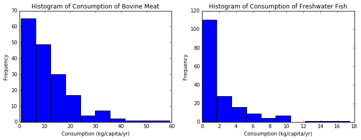
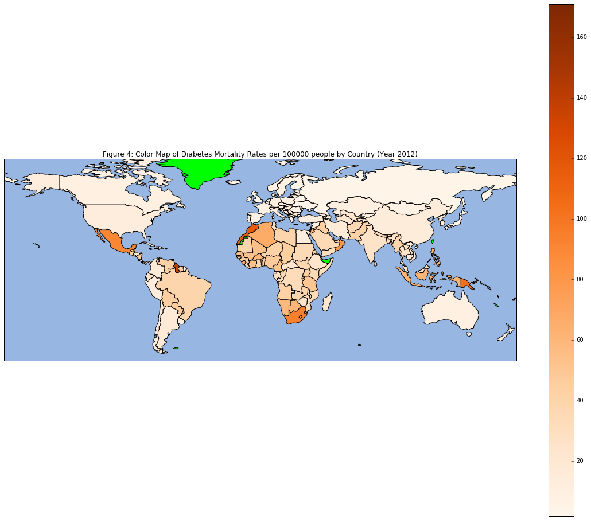
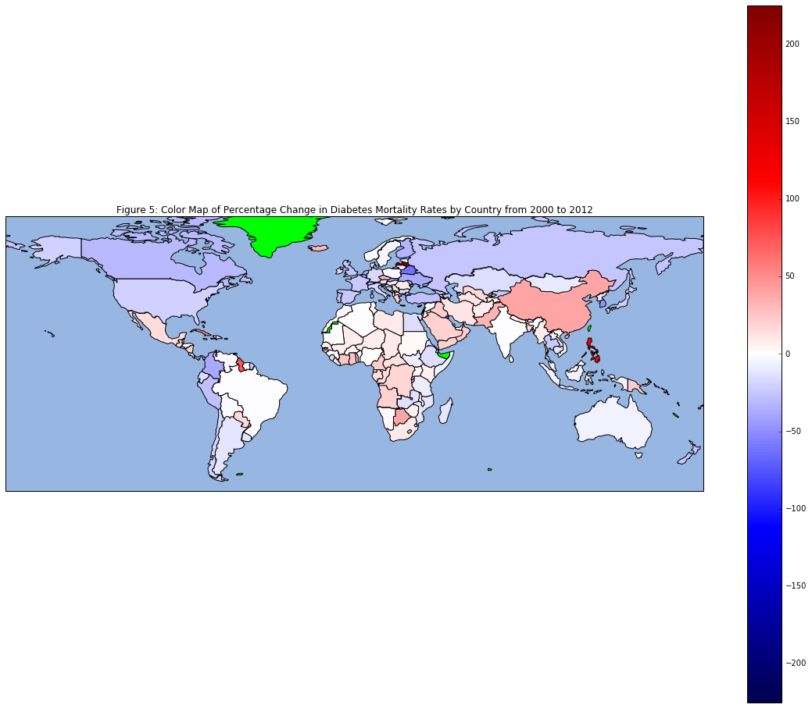
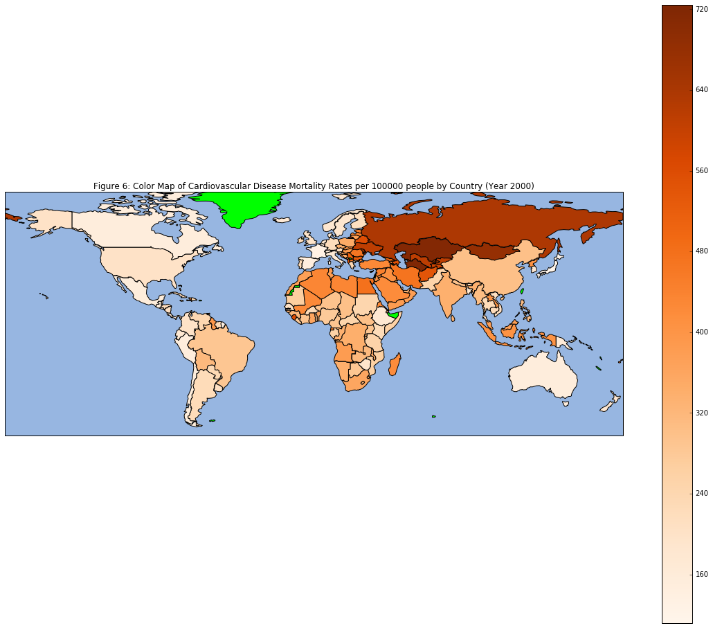
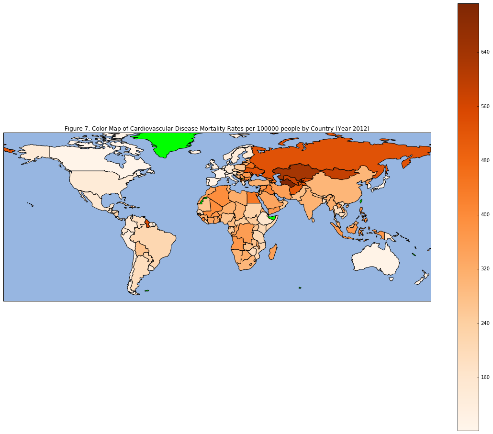
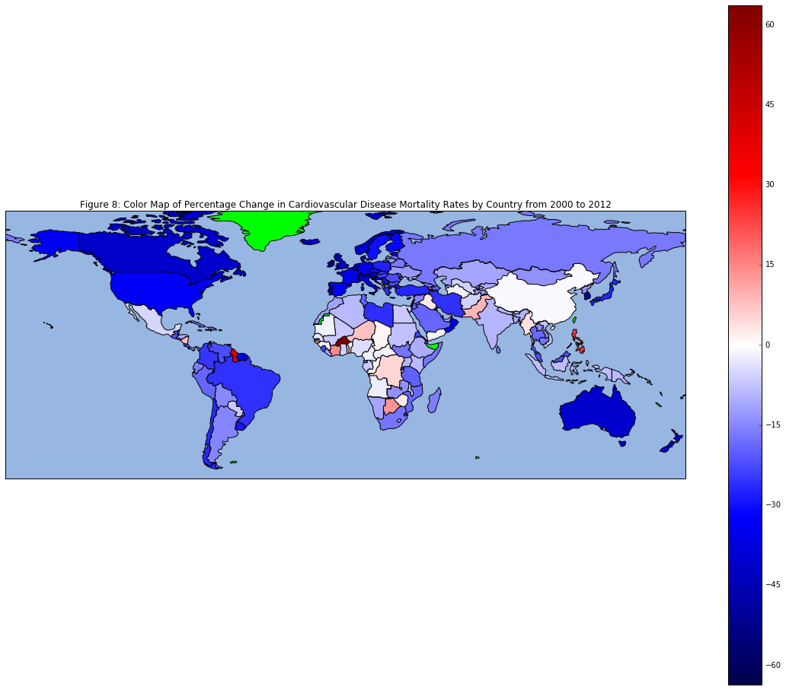
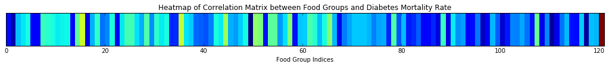
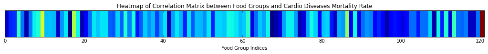

Data Exploration
Food Group Exploration
Some basic exploration of the data reveals some trends about food consumption. Livestock takes a lot of energy to raise, so high meat consumption is concentrated in a few wealthy countries who can afford the (energy) cost, so histograms of livestock consumption would be right-skewed to various degrees. Agriculture generally has a smaller energy cost, so we can see less skewed histograms, such as the one for Sugar & Sweeteners.
World Maps
We then created color-coded world maps to show the variation in disease mortality rates around the world, with deeper colored countries having higher disease mortality rates. We also generated color-coded maps of the change in disease mortality rates from 2000 to 2012, with red countries signifying increasing mortality rates and blue countries signifying decreasing mortality rates. The change in mortality rates for countries with respect to changes in food consumption would provide a good opening for future analysis. Green countries are those for which we have no data. While we considered using a geographical k-nearest neighbors approach, as no scientific correlation has been shown between geographic location and diabetes mortality rate in past research, we deemed such an approach scientifically unsound.
    "Mini" Heatmaps
Finally, we created "mini heatmaps" showing the correlation between 2000 food group consumption data and diabetes and heart disease mortality respectively. For the former, ignoring the last column where the diabetes mortality rate predictor would naturally be perfectly correlated with itself, we noted that a number of predictors are yellow, indicating "mildly correlation" with diabetes mortality rate, but no overall strong correlation. In the second heatmap, the last column is again completely red, indicating that the Cardio Disease Mortality Rate predictor is perfectly correlated with itself, serving as a good sanity check for our work. Most of the columns in these "mini heatmaps" are blue, indicating little correlation in this particular case between 2000 food consumption data and disease mortality rates.
 We constructed more robust models to predict disease mortality rates based on past food consumption in our "Modeling and Classification" section, but we just wanted to demonstrate the functionality of our code here.